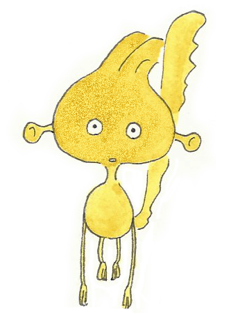
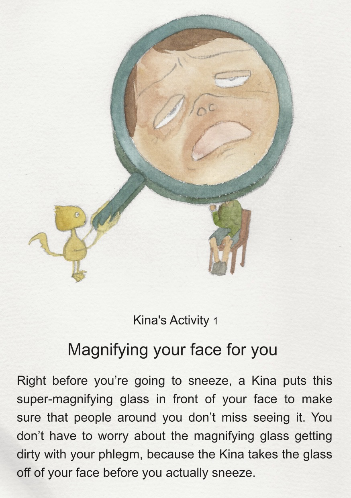

I’m going to draw and paint 42 Kina Activities.
42個のキナの習性を描いていきます。
キナの活動３：角度を測ってくれる
嫌なことがあったときなどに、あなたが思いがけず座ったときの体の周りにできた角度を測ってくれる。測られた角度は記録されて大切に保管されている

キナの活動２：スポーツのルールを説明してくれる
バスケットボールなどのスポーツをしていてゴールを外した場合、あなたがゴールがどこなのかを理解していない可能性があるので、どこにゴールすべきかをキナが指し示し、「ボールはバスケットの中に入れないといけないんだよ。」などと教えてくれる。

キナの活動１：あなたの顔を拡大してくれる
あなたがクシャミをする前に、その寸前の顔を周りの人が見過ごすことのないようにするため、キナがこの超拡大虫めがねをあなたの顔の前に差し出してくれる。実際クシャミをするときはこれをどかすので、虫めがねがあなたの唾液で汚れることを心配する必要はない。


Home